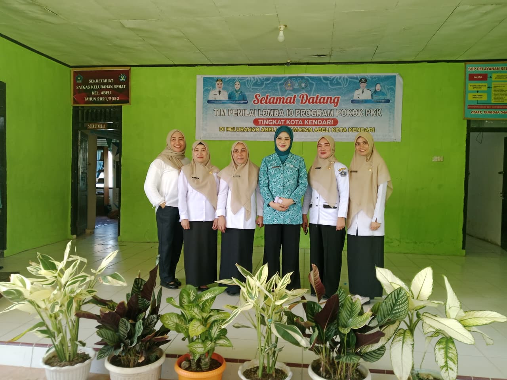
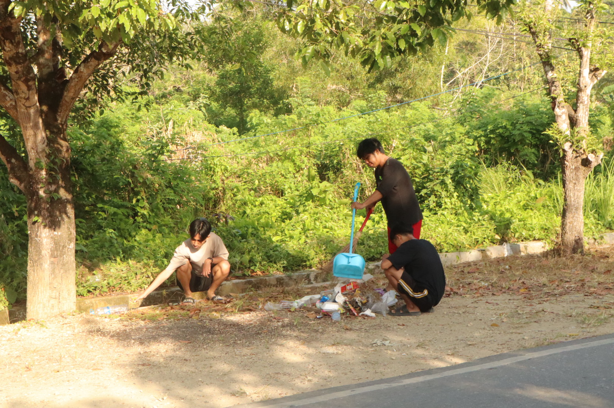

Kumpulan informasi terkini, laporan harian kegiatan KKN, dan artikel edukasi literasi digital untuk seluruh warga Kelurahan Abeli.
Edukasi bagi warga Kelurahan Abeli untuk mengenali, memverifikasi, dan menghentikan penyebaran berita bohong di media sosial demi terciptanya lingkungan informasi yang sehat dan harmonis.
Klik tombol portal resmi di bawah ini jika Anda menerima berita meragukan untuk memastikan apakah berita tersebut fakta atau hoax:

NIP. 198405222009012003
"Selamat datang di portal informasi digital Kelurahan Abeli. Kami berkomitmen untuk terus meningkatkan pelayanan publik yang transparan, profesional, dan inklusif. Melalui sinergi bersama Ketua RW, RT, serta program pengabdian KKN Tematik mahasiswa, kita bersama-sama mewujudkan Kelurahan Abeli yang mandiri, maju, dan harmonis."
"Terwujudnya Kelurahan Abeli sebagai kawasan hunian dan pusat ekonomi pesisir yang tertib, aman, sejahtera, serta berbasis gotong royong."
Meningkatkan kinerja aparatur kelurahan dalam memberikan pelayanan publik yang cepat, tepat, transparan, prima, dan bebas dari pungutan liar.
Mendorong partisipasi aktif lembaga RT/RW dan elemen masyarakat dalam perencanaan pembangunan fisik serta pemberdayaan ekonomi lokal.
Mengenal lebih dekat wilayah, layanan, potensi, dan karakteristik Kelurahan Abeli.
Terletak di Kecamatan Abeli, Kota Kendari, Sulawesi Tenggara. Kelurahan ini memiliki wilayah pesisir strategis.
Daftar organisasi kemasyarakatan resmi yang aktif berkontribusi dalam pembangunan dan pemberdayaan di Kelurahan Abeli.


Pemberdayaan Kesejahteraan Keluarga (PKK) Kelurahan Abeli aktif menggerakkan program posyandu, posbindu, pembinaan UMKM ibu-ibu, dan peningkatan ketahanan pangan tingkat rumah tangga.

Wadah pengembangan generasi muda Kelurahan Abeli yang fokus pada kegiatan kepemudaan, pembinaan olahraga, kesenian, aksi sosial, serta tanggap bencana di lingkungan kelurahan.


Lembaga Pemberdayaan Masyarakat (LPM) bertindak sebagai mitra strategis kelurahan dalam merencanakan pembangunan fisik, menyalurkan aspirasi Musrenbang, dan memelihara gotong royong warga.
Kumpulan dokumentasi foto kegiatan sosial, pembangunan fisik, dan musyawarah yang diselenggarakan oleh warga Kelurahan Abeli.




Website ini didevelop secara khusus oleh tim IT KKN Tematik dan didukung oleh seluruh anggota kelompok KKN Kelurahan Abeli.
Ikuti media sosial Instagram KKN Kelurahan Abeli untuk melihat infografis edukasi anti-hoax, video sosialisasi warga, dan liputan kegiatan harian pengabdian kami!